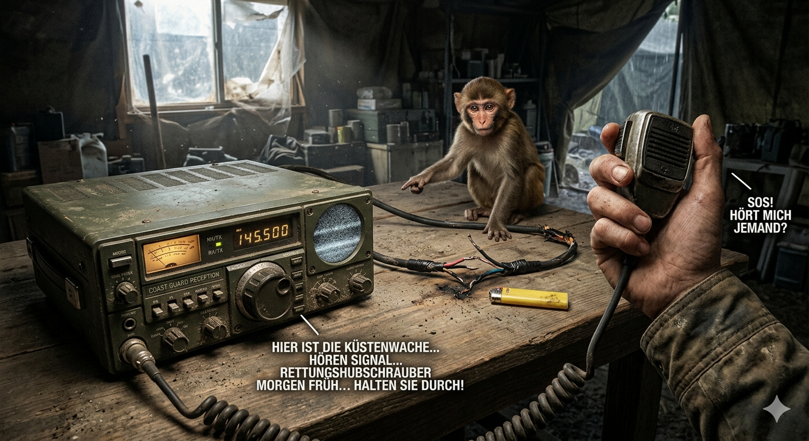

Du betrittst den staubigen Raum. Auf dem Tisch steht ein massives, altes Funkgerät. Du drückst auf die Knöpfe – nichts passiert. Doch der kleine Affe klettert auf die Rückseite des Tisches und zeigt auf ein loses, durchgekauttes Kabel.
Mit etwas Geschick und deinem Feuerzeug gelingt es dir, die Drähte wieder miteinander zu verbinden. Plötzlich fängt das Gerät laut an zu summen! Du rufst verzweifelt in das Mikrofon: „SOS! Hört mich jemand?“ Nach quälenden Sekunden des Rauschens knackt es: „Hier ist die Küstenwache. Wir empfangen Ihr Signal! Ein Rettungshubschrauber ist unterwegs, aber wegen des aufziehenden Sturms können wir erst morgen früh bei Ihnen sein. Halten Sie durch!“